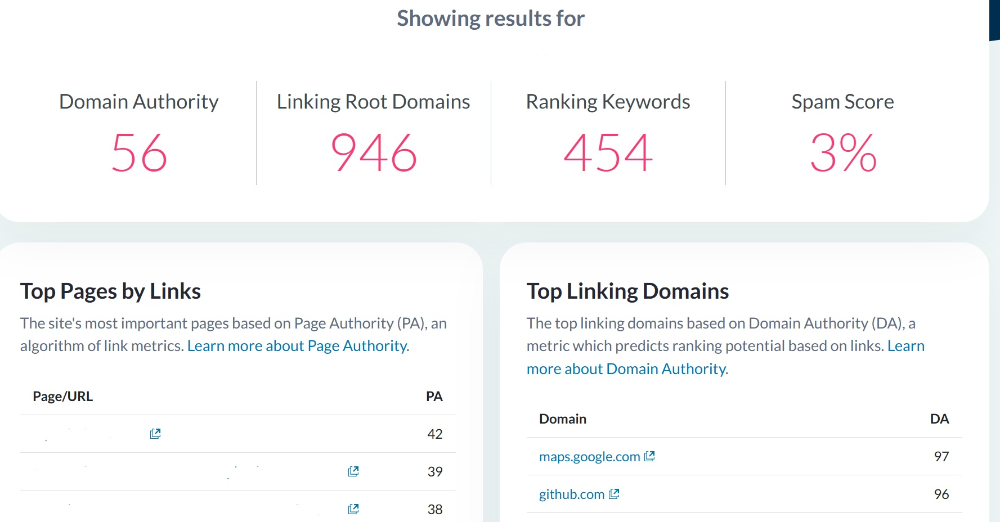

A confidential B2C brand offering custom CV and resume services needed stronger organic visibility, more lead opportunities and a more authoritative website presence in a competitive digital-services market.
- Confidential B2C custom CV and resume service.
- One-year SEO engagement completed independently.
- Primary focus: extensive off-page SEO with basic on-page support.
- Moz Domain Authority increased from 12 to 48 during the tenure.
Project overview
A B2C provider of custom CV and resume services.
Independent ownership of the SEO work.
Extensive backlink building and authority development.
Foundational page relevance and search improvements.
The challenge: visibility, leads and authority
The website needed to attract more organic traffic and create more opportunities for prospective customers to discover its CV and resume services. At the same time, its initial authority profile was limited, with a Moz Domain Authority score of 12.
The project therefore required sustained off-page work while maintaining the website’s basic on-page foundations. The goal was to create a stronger platform for organic discovery and lead generation rather than chase a metric in isolation.
The authority-building work supported a broader business objective: help more potential customers discover and trust the service through organic search.
The SEO strategy
Establish a baseline
Used Moz to understand the starting authority profile and monitor progress over time.
Build backlinks consistently
Made extensive backlink acquisition the central focus of the one-year campaign.
Support key pages
Completed basic on-page SEO work to strengthen relevance and search readiness.
Monitor organic performance
Used Search Console and GA4 to review visibility, traffic and acquisition signals.
How the campaign was executed
- Reviewed the starting authority profile.
The initial Moz metrics provided a baseline for monitoring the website’s off-page development.
- Handled foundational on-page work.
Basic page-level improvements supported the website’s relevance and organic-search readiness.
- Worked extensively on backlink building.
Consistent off-page execution was used to expand the website’s link profile throughout the engagement.
- Managed the project independently.
Research, implementation, monitoring and ongoing prioritization were handled without a supporting team.
- Tracked more than authority metrics.
Search Console and GA4 were used alongside Moz to keep organic visibility and traffic connected to the wider business objective.
The results
During the one-year engagement, Moz Domain Authority increased from 12 to 48. The latest attached Moz report shows that the website’s authority profile has since continued to strengthen.
The verified outcome attributed to the engagement period.
The website’s latest reported authority profile.
Additional metrics visible in the attached Moz report.

What the performance data means
The increase from DA 12 to 48 during the engagement demonstrates substantial development in the website’s Moz-measured link authority. The current report, showing DA 56 and 946 linking root domains, indicates that the authority profile remained strong after the tenure.
Domain Authority is a third-party Moz metric, not a Google ranking factor. It is useful for tracking link-profile development, but organic traffic, search visibility and qualified leads remain the more important business outcomes.
The campaign aimed to support organic traffic and lead generation, but no verified traffic or lead totals were supplied for this case study. They are therefore presented as campaign objectives rather than claimed numerical results.
Tools used
Moz
Domain Authority, linking domains, keywords and Spam Score.
Google Search Console
Search visibility, queries, clicks and indexing signals.
Google Analytics 4
Organic acquisition, sessions and user behavior.
Independent ownership
Strategy, execution and monitoring handled independently.
Frequently asked questions
What was the main objective of this SEO campaign?
The campaign aimed to increase organic visibility and lead opportunities while building a stronger authority profile for the B2C service website.
How much did Domain Authority improve?
Moz Domain Authority increased from 12 to 48 during the one-year engagement. The latest attached snapshot shows a current score of 56.
Which SEO activities were used?
The work focused on extensive backlink building, supported by basic on-page SEO and ongoing performance monitoring.
Was the project completed independently?
Yes. Subhajyoti independently handled the project throughout the one-year engagement.